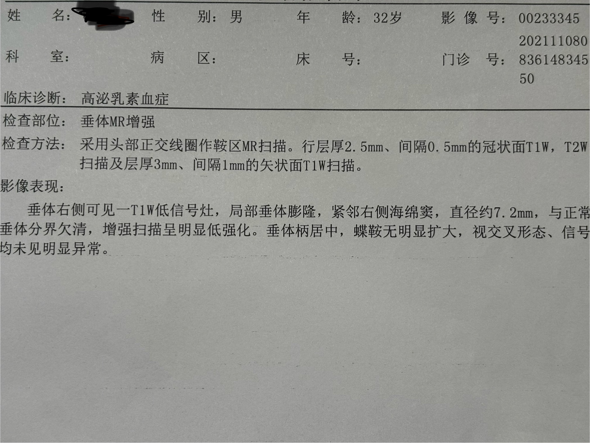
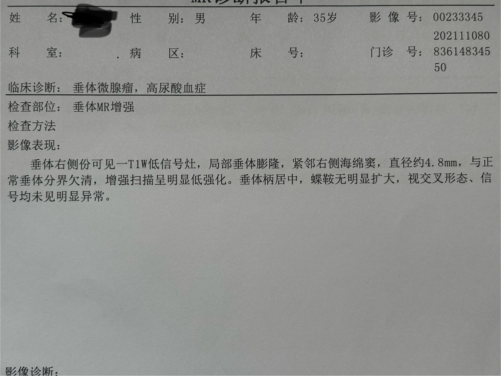

我是如何有效治疗垂体瘤的
首先，诚挚的感谢复旦大学附属华山医院内分泌科郑杭萍医生、李璐医生、何敏教授以及Cedars-Sinai医学中心的 Prof. Shlomo Melmed，他们的专业治疗和耐心指导，让我在短短2年内有效治疗了垂体瘤。
其次，感谢我的朋友左岸，从遥远的土耳其为我代购药品，让我在疫情期间顺利完成治疗，我们的友谊就像美酒，醇香浓厚。
🔍 怎么发现的？
2021年年底体检，发现尿酸略微偏高，遂至华山医院内分泌科检查。在与郑杭萍医生交谈的过程中，有聊到睡醒疲劳，性欲减退的症状。她看我手戴帝舵，似乎不差钱的样子，就给我来了一个内分泌全套检查。
内分泌系统全套检查包括 甲状腺、肾上腺、性腺、胰腺 等多个腺体的检查，检查费用约2000元左右，主要是抽血，大约3个工作日拿到全部报告。
所有报告中，泌乳素指标偏高，睾酮指标正常低值，其他指标正常。因为熬夜会影响泌乳素的分泌，郑医生建议我先生活干预，调整三个月后做垂体MRI，以排除垂体瘤。生活方式干预三个月后，也就是2022年3月，复查泌乳素指标没变。同时做了MRI，2个工作日看到了报告，报告显示垂体瘤直径约7.2mm，最终还是确诊垂体瘤。
回家查文献，查到一个有趣的事实：高泌乳素血症并不一定是垂体瘤直接导致的。有可能是垂体瘤压迫正常垂体组织，导致的。
查个尿酸高，查出来脑子里面有个瘤，这个世界真是奇妙。
💊 如何治疗的？
2022年3月，第二次去华山医院内分泌科，见到的是李璐医生。交谈过后，她建议我去总院复查单体催乳素(23 kD)、大催乳素(40～60 kD)和与免疫球蛋白G(IgG)结合的巨催乳素分子(150 kD)。要做垂体瘤的分型，明确是无功能性、泌乳素型还是混合型，同时还要密切注意视功能以及定期进行视力检查。
垂体瘤的背景知识以及分型
垂体瘤是良性的，并不会转移，但是会压迫周围的组织，导致一系列症状。根据分泌激素的不同，垂体瘤分为以下几种：
- 无功能性垂体瘤：不分泌激素，占垂体瘤的50%。
- 泌乳素瘤：分泌泌乳素，占垂体瘤的30%。
- ACTH瘤：分泌ACTH，占垂体瘤的10%。
- TSH瘤：分泌TSH，占垂体瘤的1%。
- FSH/LH瘤：分泌FSH/LH，占垂体瘤的1%。
泌乳素与睾酮是互相作用的，所以男性患者泌乳素过高会出现性欲减退等症状，因为睾酮的分泌被抑制了。睾酮分泌量不足会导致肥胖、骨质疏松等症状。同时，如果垂体瘤生长的方向不好，压迫正常垂体会导致其他激素分泌异常。如果体积过大压迫视交叉(视神经的一段)，会导致视野确缺失，甚至失明。
经过仔细的复查之后，我被确诊为垂体微腺瘤-泌乳素型，人群总发病率约60～100/百万，男性发病率约10～20/百万。
治疗方案
手术治疗：
等垂体瘤继续生长，直径超过1cm后，经鼻腔-蝶鞍入路手术切除。优点是一次性治愈，缺点是手术风险大，为了防止复发，需要保护性多切除垂体组织，可能会导致垂体功能不全，需要终生服用若干种人工合成激素。神经外科排名前三的国内医院：天坛、宣武、华山。
药物治疗：
选择性多巴胺受体激动剂。优点是无创伤，缺点是需要终生服药，有一定的副作用。而且服药后会改变垂体瘤的质地，一旦药物治疗失效，会增加手术切除的难度。
国内临床使用甲磺酸溴隐亭，一种短效麦角衍生物多巴胺受体激动剂。需要每日服药，且副作用广泛，不良反应发生率超过60%。包括 头痛、头晕、眩晕、嗜睡等神经症状；口干、恶心、呕吐、腹泻或便秘等消化道症状；幻觉、妄想、抑郁或躁狂等精神症状；直立性低血压，心律失常，心肌缺血，心脏瓣膜改变等心血管系统异常；
由于我开车上下班，也特别喜欢运动，无法接受这么严重的副作用，所以没有选择服用溴隐亭。这么看，没有完美的治疗方案，怎么选都会有一点风险。这个时候，我把目光转向了祖国医学。我查到了一篇《麦芽治疗高泌乳素血症的临床认识及研究进展》。这篇文章指出，麦芽不同炮制方法及剂量可以治疗高泌乳素血症。淘宝买了半年用量的炒麦芽，每天早晚熬水喝。半年后复查泌乳素，确实降低了，但MRI显示垂体瘤直径并未缩小。祖国医学也有局限性，出路还得是现代医学。
再一次遇到困难
在Google查找相关文献的时候，看到了国外临床普遍使用一种叫Cabergoline(卡麦角林)的药物，一款长效多巴胺受体激动剂。相比于溴隐亭，卡麦角林一周服用一片可抑制泌乳素2周，副作用特别少。但它有一个很致命的缺陷，剂量不对会引起心脏瓣膜损伤。由于国内没有上市这款药物，所以很多医生并不知道它的存在。这个时候，我联系上了Cedars-Sinai医学中心的 Prof. Shlomo Melmed。他是美国垂体疾病的专家，曾经担任过美国内分泌学会主席。我给他发了邮件，大约1个月后收到了回复。邮件里详细解释了疾病的成因和美国那边临床治疗方案，建议我服用DOSTINEX。
又给我科普了Cabergoline(卡麦角林)这款药物。这个药分两种，高剂量片剂(1mg/2mg/4mg)的叫Cabaser，用来治疗帕金森。低剂量片剂(0.5mg)的叫DOSTINEX，用来治疗高泌乳素血症和泌乳素瘤。他建议我每周服用一片DOSTINEX，每三个月检查泌乳素，同时每半年检查心脏超声，每隔一年检查MRI。
本着生死看淡，不服就干的个性，我自行购入了2个月用药量的DOSTINEX。服药1个月后，我联系了华山医院内分泌科的何敏教授。何敏教授曾经在哈佛大学附属布莱根女子医院任访问学者，我猜她应该知道卡麦角林……当然结果她确实知道。她很惊讶我知道这个药，并且很佩服我的勇气，自己就吃上了，还能以极低的价格买到这个药(低于市场价30%)。她建议我继续服用并鼓励我，“疗效显著的话，可以让垂体瘤完全消失。”
🏥 治疗效果
从2021年的确诊，到半年生活方式干预无效，再到2023年初开始服用DOSTINEX。我的血清泌乳素含量降到了0.XX的极低水平，同时睾酮升高到正常上限的高值，疲劳以及性欲减退的症状完全消失，每天精力满满，并且没有任何我可以感知到的副作用。在2024年5月的MRI复查中，垂体瘤直径从7.2mm缩小到了4.8mm，这说明DOSTINEX对泌乳素瘤的治疗效果非常好。何教授甚至建议我停用DOSTINEX，但我还是想每周一片，直到垂体瘤消失。


💡 一点感想
从确诊，到选择药物治疗，接着尝试中医，再到最后的疗效显著。回顾这三年我独自应对这个疾病的方式和心态，有以下几点需要分享给大家。
- 求神问卜，不如自己做主！接受专业人士的建议，不依赖外界非专业人士的意见和建议，充分思考自己的想法和决定。
- 念佛诵经，不如本事在身！如果没有良好的英语能力，我无法和Prof. Shlomo Melmed 交流病情。
- 打坐参禅，不如弄棒打拳！坚定想法后还要付诸行动，实践出真知。
- 接受现实，正视病情！ 否认或逃避并不能改变现状，唯有坦然接受病情，才能理性地制定治疗方案，积极配合治疗。
- 调整心态，减少压力！ 适度运动有助于缓解压力，这三年我保持每周打1～2次网球的节奏。保持身心健康，平稳的心态也使得我在查找文献的时候能保持冷静，可以理性的选择治疗方案。
- 生死看淡，不服就干！不同的治疗方案会有不同的缺点，需要一点勇气和决心做决断。病情是会随着时间动态发展的，优柔寡断、拖拖拉拉对治病来说非常不好。